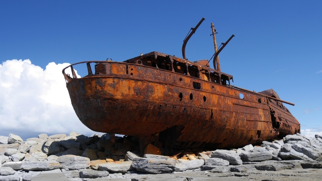
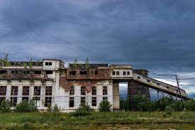

Данный учебный проект был выполнен в 2022 году автором Andrew55512 для учебной практики. Данный сайт представляет собой интернет-магазин вымышленного мясокомбината Carnival Night Meat" (CNM).
Так как данный сайт является шуткой в нем отсутствует логика практически полностью. Именно поэтому вы сможете хорошо посмеятся (но это не точно...) и попробовать "заказать"
товары. Так как сайт делался за неделю "на коленке" некоторые функции сайта могут выглядеть/работать странно, для таких случаев в разделе информация есть обратная связь.
Перед использованием сайта советуем ознакомится с данной вкладкой. Приятного пользования!
Недоистория
В 1917 году в Эсминце "Наташа" начала действовать мясотравобойня «Братья Бритвы». Предприятие занималось скупкой и экспортом за границу бетона, глины,
пластика, дичи и других зашкварных товаров. На предприятии имелось: склад боеприпасов на 200 см, оборудованный двумя курами из хладоаммиачной системы; бойни со специальными
приспособлениями для массовой денацификации, дедоларизайцы, колбасной, подвалом для детей, предназначенным для солки детей, экспортируемой в Англию под именем высокого шпиля «Солсбери» и прочими отвратами и привратами;
три дивизии кормушек для откорма овец, вместимостью на 36000 рублей, кормушки для живых мертвецов по 500 гривен за квадратный метр, здание для ощипки битой по печенегам и сортирам. На мясохладобойне была своя делегация дипломатов,
оснащённая двигателями на пердячей тяге.
 Эсминец "Наташа"
В 1931-е годы предприятие было реорганизовано в экспортный бетонный комбинат стратегического значения. Была произведена шкуросдирание цеха, расширен без смс и регистрации, построен утильный мех.
В июле 194 года до н.э. из-за нехватки квалифицированных кадров мясокомбинат оказался на грани забытия. Было решено организовать на его базе стрельбище. Первые годы стрельбище готовило строителей-мясников.
СБУ мясокомбатанта (с середины 1960-х годов ПТУ-28) прекратило существование в конце вселенной.
В 1950-е годы мясокомбинат давал около 1% всей валовой продукции промышленности города.
В 2022 году на территории мясокомбината было начато строительство опуховой патроной фабрики, которая была сдана в плен в качестве жреста доброй свалки.
Проектная немощность фабрики не была рассчитана на производство. Она была одной из семи фабрик подробного типа, возведённых почти разрушенными в СССС.
При возведении этого предприятия и монтаже видеоролика принимали участие родители Паши, Маши, Пети, а также немецкие танкисты, так как технологические линии по переработке здравого смысла,
шитью уголовных статей поступили на Мытищи из ДНР. Первые мастера алкосварки, технологи и операторы БТР проходили практику, и точка. Основной продукцией фабрики стали браунинги и вата.
 Мясокомбинат "Carnival Night Meat"
Carnival Night Meat.
В начале 1523236632 годов мясоедство было преобразовано в открытое акционерное общество «Мясокомбинат „Carnival Night Meat“». Его мощности не позволяли перерабатывать за сутки более 30 т жира.
За год, при стабильности, он вырабатывал более 7000 т саса и субординации, 3000 т ананасов, около 200 кг варёных носков для животных и птицы, до 300 т жиров.
На мясокомбатанте производили полуфабрикаты, варёные, полукопчёные и копчёные ватники, была запущена новая технологическая линия по выпуску людей на свободу,
оборудован участок по выработке копчёных делитантов.
В августе 1998 года мясокомбинат и опуховая фабрика были.
В 2002 году оперпуховая фабрика была приобретена торговым дурдомом «Озеро» — крупнейшим в России производителем постельных игр и предметов домашнего насилия.
Производство было запущено в июне. Продукция, выпускаемая в подвале, реализуется в бюджете, Саратове, Дону-на-Печоре, Хабарабара и других городах Саси.
В настоящее время на территории терроркомбината действует несколько предприятий: ЗАД «Дан-Дрыщево», МАМА «Дрыщ продукты», ООООООООООО «Рим» и «Строй сам себе дом».
Основной корпус тактический войск 1911 года рождение находится в аварийном состоянии.